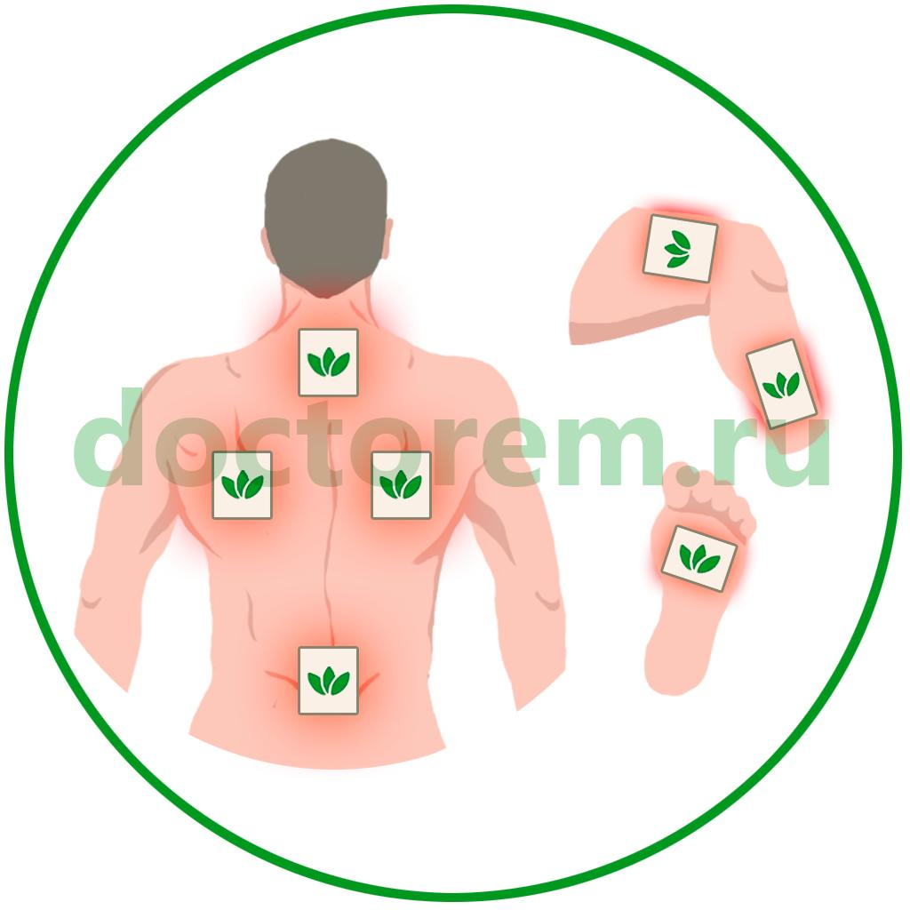
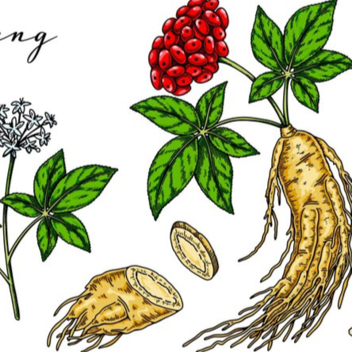

Vita Plus
2000 р.
ОПИСАНИЕ:
Doctorem Vita Plus - это комплекс "МИКРО ПИТАНИЯ" организма, обеспечивающий процесс его обновления на клеточном уровне.Имея в своем составе женьшень, коллаген и ионы серебра, а также благодаря трансдермальному способу доставки этих элементов, Vita Plus является эффективным помощником для укрепления иммунитета и поддержания здоровья суставов, улучшения их работы и снятия болевых синдромов.
ОБЛАСТЬ ПРИМЕНЕНИЯ:
- укрепляет иммунитет;
- снижает воспалительные процессы;
- помогает в борьбе с вирусами и бактериями;
- нормализует кровяное давление;
- понижает холестерин;
- помогает при заболеваниях глаз;
- помогает при заболеваниях суставов;
- повышает упругость кожи.
СРОК ЭФФЕКТИВНОГО ВОЗДЕЙСТВИЯ:
48 часов с момента нанесения.СОДЕРЖИМОЕ УПАКОВКИ:
25 пластырей 130х94 мм.СОСТАВ АКТИВНОГО ВЕЩЕСТВА:
ЗОНЫ НАНЕСЕНИЯ:
Достаточно наносить один пластырь за раз. В случае необходимости нанесения на несколько зон, пластырь можно разрезать на части. Замену пластыря рекомендуем производить через каждые 2 дня.- задняя сторона шеи;
- лопатки;
- поясница;
- бедро и голень;
- подошва стопы.

ОПИСАНИЕ АКТИВНЫХ ЭЛЕМЕНТОВ

Красный корейский женьшень
Корейский женьшень считается «корнем жизни». Это уникальное растение с поистине могущественными свойствами. Женьшень способствует сохранению здоровья в любом возрасте и помогает дольше оставаться молодым, крепким и полным сил.Женьшень, растущий в Корее, признан лучшим в мире по качеству, и именно корейский женьшень лидирует по концентрации полезных веществ.
Полезные свойства женьшеня:
- способствует нормализации капиллярного кровообращения,
- укрепляет память и усиливает продуктивность работы головного мозга;
- способствует укреплению физической выносливости и работоспособности;
- повышает иммунитет, дарит телу силы побеждать заболевания;
- помогает бороться с хронической усталостью, напряжением, стрессами, избавляет от беспокойства, восстанавливает утраченные силы после физических нагрузок;
- обладает тонизирующими свойствами;
- является отличной профилактикой гриппа и простудных заболеваний;
- положительно влияет на состояние кожи и внутренних органов;
- препятствует старению организма и сохраняет здоровье человека в любом возрасте.
Сапонины
- это сложные биологически активные вещества, содержащиеся в растениях. В их состав входят углеводы и различные радикалы. Сапонины оказывают существенное влияние на растительные и животные клетки, поэтому используются человеком в фармацевтике в качестве лекарственных средств.Уникальная химическая структура сапонинов обусловливает их потенциальную пользу для здоровья. Сапонины оказывают благоприятное воздействие на уровень холестерина, стимулируют иммунную систему, оказывают антиоксидантное действие и даже могут поддерживать прочность костей.
Сапонины эффективно подавляют рост раковых клеток. В частности, некоторые сапонины оказывают антиоксидантное действие и могут быть токсичными по отношению к раковым клеткам.

Ионы серебра
Об обеззараживающих свойствах серебра известно с древних времен.Ионы серебра обладают бактерицидным, противовирусным, выраженным противогрибковым и антисептическим действием и служит высокоэффективным обеззараживающим средством в отношении патогенных микроорганизмов, вызывающих острые инфекции.
Ионы серебра обладают выраженной способностью инактивировать вирусы осповакцины, гриппа штаммов А-1, В, некоторых энтерои аденовирусов, а также ингибировать вирус СПИДа.
Органический германий
Для человека германий является биологическим активным микроэлементом. Обнаружена жизненная необходимость ультрамикродоз германия для повышения эффективности иммунной системы, борьбы с онкологическими заболеваниями. Германий является одним из микроэлементов, участвующих в обменных процессах в организме человека. Германий присутствует практически во всех органах и тканях человека (мышечная ткань, кровь, мозг, легкие, селезенка, желудок, печень, поджелудочная железа, щитовидная железа, почки и т.д.).Гинзенозиды
- это отдельная группа растительных элементов, которые содержатся в женьшене. Они стимулируют гемоглобин на соединение с кислородом, что повышает сатурацию (насыщение кислородом) клеток организма, в результате повышается физическая активность и выносливость.Гинзенозиды обеспечивают:
- Нормализацию сердечно-сосудистой системы. Активные элементы стимулируют работу сердца и снижают уровень холестерина в крови. Снижают риск развития тромбов и нормализуют уровень сахара в крови.
- Усиление потенции. Гинзенозиды вступают в реакцию с определенными веществами в крови и повышают насыщение кровотока оксидом азота. Этот газ расширяет кровеносные сосуды и способствует наступлению эрекции.
- Повышение иммунитета. Обладает комплексным воздействием на активизацию функционирования иммунной системы.
- Замедление процессов старения. Повышает физические способности и восстанавливает жизненные силы, помогает в борьбе с синдромом хронической усталости.